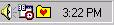
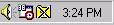
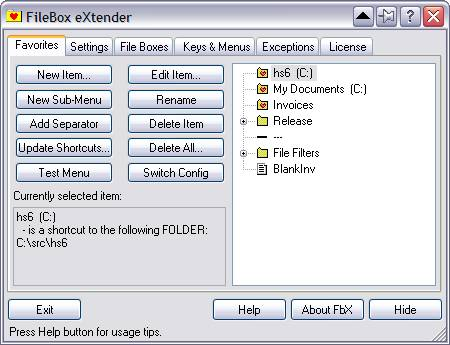

When you start FileBox eXtender, it places an icon in the System Tray area, next to the time display in the right-hand corner of the Windows Start menu bar. This folder icon has a little red heart on it. If you have the FileBox eXtender buttons disabled, the heart has an 'X' through it , see the two examples below (enabled, disabled).
 
FileBox eXtender icon in the System Tray (folder with a heart)
Enabled on the left, and disabled on the right.
To configure FileBox eXtender, click on the icon in the system tray. The FileBox eXtender window, similar to the one below, appears. You can then access the configuration tabs. The features of the tabs are explained in this section of the help.
 When you're finished, pick Hide to put FileBox back into the system tray. If you pick Exit and confirm it, the program will close completely, removing it from your system and making its buttons unavailable. When you choose Hide, the changes you make are finalized and will display on the next usage of FileBox's menus.
When you're finished, pick Hide to put FileBox back into the system tray. If you pick Exit and confirm it, the program will close completely, removing it from your system and making its buttons unavailable. When you choose Hide, the changes you make are finalized and will display on the next usage of FileBox's menus.

The controls at the bottom of FbX window are:
Exit
press this button to deactivate FileBox eXtender. If you just want to close the FileBox eXtender window but keep it active to display the Favorites and Recent buttons on file dialog boxes, please press the Hide button instead.
About FbX
press this button to see a dialog with the current version number of FileBox eXtender, support and purchase contact information, and other useful information.
Help
press this button to display helpful information contained within the main help file - such as usage tips, tutorial, support and purchase contacts, and more.
Hide
press this button to hide the FileBox eXtender configuration window. FileBox eXtender will remain active, still displaying its buttons on Windows file dialog boxes, and, if enabled, its icon in the system tray (on the task bar, near the clock). If you want to completely exit and deactivate the program, press the Exit button instead.
Hints area
watch this area (at the very bottom of FbX window) for helpful hints as you learn how to use FileBox eXtender.